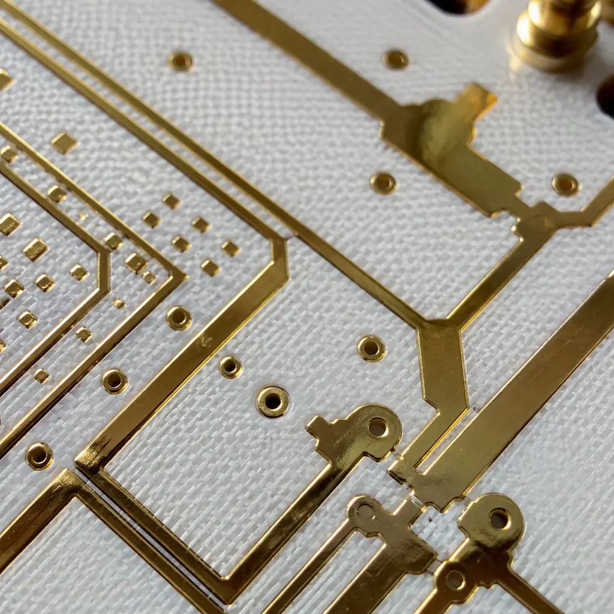
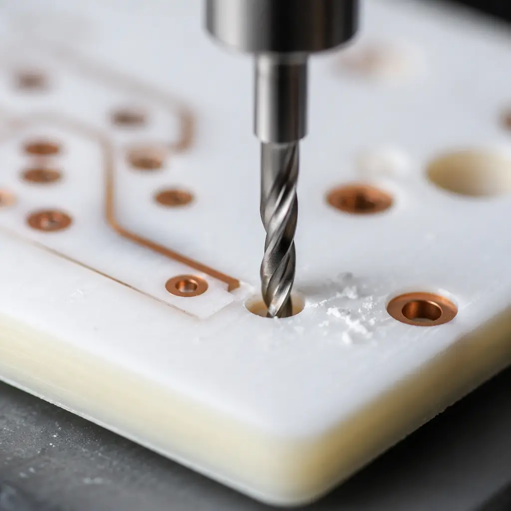

PTFE (polytetrafluoroethylene) is the gold standard for high-frequency PCB substrates. With a dielectric constant (Dk) as low as 2.1 and a dissipation factor (Df) below 0.001 at 10 GHz, no other commercial PCB material matches its combination of low loss and stable electrical performance across temperature and frequency. But the same material properties that make PTFE an exceptional RF dielectric — chemical inertness, low surface energy, and a high coefficient of thermal expansion — also make it one of the most difficult materials to fabricate into a reliable multilayer PCB.
At Huaxing PCBA, we process over 1,500 PTFE-based PCB panels per month for 5G base station, satellite communication, and automotive radar applications. Our process control system tracks 18 parameters specific to PTFE fabrication — from drill entry material selection through plasma treatment dwell time to electroless copper bath temperature — that standard FR-4 processing does not require. This guide shares the process knowledge that determines whether a PTFE board meets IPC-6012 Class 3 requirements on the first build or requires three revisions.

Why PTFE Is Fundamentally Different From FR-4
FR-4 is a glass-reinforced epoxy laminate. The epoxy resin system is mechanically rigid, chemically reactive (it bonds readily to copper foil and plated copper), and thermally stable up to its glass transition temperature of 130-180°C. PTFE is none of these things. It is a thermoplastic fluoropolymer — mechanically soft, chemically inert (nothing bonds to it without surface modification), and it undergoes a phase transition at 19°C where its specific volume changes by ~1.5%. This volume change occurs at room temperature during normal PCB fabrication and operation, creating dimensional instability challenges that epoxy systems never face.
The practical consequence: every standard PCB fabrication step — drilling, desmear, electroless copper, electrolytic plating, solder mask application — must be modified for PTFE. A shop that processes PTFE with the same parameters as FR-4 will produce boards with plating voids, barrel cracks, and delamination. Yield drops from 92-96% (FR-4) to 40-60% (PTFE with unmodified processes). The difference between a capable and incapable PTFE fabricator is not equipment — it's process knowledge. Understanding laminate material properties is the starting point for managing these differences.
PTFE Material Fact: PTFE has a surface energy of approximately 18-20 dynes/cm — lower than any other PCB substrate material. For comparison, epoxy (FR-4) is 42-46 dynes/cm. Electroless copper deposition requires at least 38 dynes/cm for reliable adhesion. This surface energy gap is the root cause of nearly all PTFE fabrication difficulties.
Drilling PTFE: Cold Flow, Smear, and Entry Material

Cold Flow — The PTFE-Specific Drilling Defect
PTFE undergoes "cold flow" (creep deformation under pressure at room temperature) during drilling. As the drill bit enters the material, the PTFE deforms plastically rather than fracturing cleanly like epoxy. This creates a characteristic "nail-head" smear at the hole entry and a ragged exit burr. The solution is a three-parameter adjustment: reduce infeed rate to 0.5-1.0 m/min (vs 2-3 m/min for FR-4), increase spindle speed to 60-80K RPM for 0.3mm drills, and — critically — use a dedicated entry material. Standard aluminum entry foil works for FR-4 but compresses PTFE. We use phenolic-resin-coated entry board (0.3-0.5mm thick) that provides a rigid cutting surface and absorbs heat from the drill flute. This combination reduces hole wall roughness from >50μm Ra (with FR-4 parameters) to <15μm Ra, meeting IPC-6012 Class 3 requirements.
Drill Bit Life on PTFE — Half the Life, Double the Cost
PTFE's softness paradoxically reduces drill bit life. The material's low modulus means the cutting edge experiences higher friction-induced heating, which accelerates wear on the tungsten carbide cutting surface. For 0.3mm microvias in FR-4, a single drill bit can produce 2,000-3,000 hits before replacement. The same bit in PTFE (Rogers RO3000 or RO4000 series) should be replaced after 800-1,200 hits. Using worn bits creates micro-cracks in the hole wall that become initiation points for plating separation during thermal stress. Our PTFE drilling stations track hits-per-bit and auto-alert at 1,000 hits for 0.3mm and 1,500 hits for 0.5mm+ drills. The added tooling cost (~$0.03-0.06 per hole) is factored into the board quote upfront.
PTFE Smear — Different Chemistry Than Epoxy Smear
Standard desmear processes use permanganate chemistry (alkaline potassium permanganate at 70-85°C) to remove epoxy smear from hole walls after drilling. This chemistry does not work on PTFE — the material is chemically inert to permanganate. PTFE smear must be removed by plasma treatment (see next section) or, for older processes, by sodium naphthalene etching (a wet chemical process using sodium metal dissolved in naphthalene and THF — hazardous, but effective). Most modern PTFE fabricators have moved entirely to plasma desmear, which is cleaner, more controllable, and leaves no chemical residues in the hole.
Plasma Treatment: The Single Most Important PTFE Process Step
Plasma treatment is not optional for PTFE — it is the process step that determines whether your board has plating adhesion or plating voids. The physics: a low-pressure RF plasma (typically 13.56 MHz at 200-500W) ionizes a gas mixture (commonly O₂/CF₄ or O₂/N₂) inside a vacuum chamber. The resulting reactive species — oxygen radicals, fluorine radicals, UV photons — bombard the PTFE surface, breaking C-F bonds and creating C-OH and C=O functional groups that raise the surface energy from 18-20 dynes/cm to 50-60 dynes/cm.
Gas Chemistry Selection — O₂/CF₄ vs O₂/N₂ vs Pure O₂
The gas mixture determines the plasma's etching vs. functionalization balance. Pure O₂ plasma etches PTFE aggressively (200-500 nm/min etch rate) but creates a weak boundary layer of low-molecular-weight fragments that reduces adhesion. A 70:30 O₂/CF₄ mixture provides both etching (to remove smear and roughen the surface to 200-400 nm Ra) and fluorination (to stabilize the surface chemistry). O₂/N₂ mixtures (50:50 to 80:20) are gentler, producing less surface roughening but better functionalization — preferred for RF designs where surface roughness directly affects conductor loss at mmWave frequencies. Our standard recipe for Rogers RO4350B multilayer: 80:20 O₂/CF₄, 300W, 200 mTorr, 20 minutes. This achieves >50 dynes/cm surface energy with 15-25 μin Ra surface roughness — the sweet spot for plating adhesion without excessive conductor loss above 20 GHz. See our impedance control guide for the surface roughness impact on insertion loss.
Time-Temperature-Power Window — Avoiding Overtreatment
Plasma treatment is a Goldilocks process: too little treatment and the copper won't bond; too much and the PTFE surface degrades into a powdery, low-strength layer that delaminates under thermal stress. The treatment window is typically 15-25 minutes at 250-400W for O₂/CF₄ chemistry. Post-treatment, the panels must proceed to electroless copper within 4 hours — the activated surface recombines with atmospheric moisture over time, losing 5-10 dynes/cm of surface energy per day. Our plasma-to-plating queue is FIFO-gated with a 2-hour maximum hold time, verified by dyne pen testing on a coupon from every batch before electroless copper immersion.
Electroless Copper on PTFE: Getting the First Micron to Stick
Palladium Catalyst Adsorption — The Critical 60 Seconds
Electroless copper deposition on PTFE begins with palladium catalyst adsorption. The activated (plasma-treated) PTFE surface must adsorb a uniform monolayer of Pd-Sn colloidal particles that initiate copper reduction. On FR-4, this happens reliably with a standard 3-5 minute catalyst immersion. On PTFE, the surface — even after plasma treatment — is less receptive. Catalyst bath temperature must be raised to 40-45°C (vs 30-35°C for FR-4), and the immersion time extended to 6-8 minutes. Even with these adjustments, the backlight test (microscopic examination of plated hole cross-sections) reveals Pd coverage gaps on 2-5% of PTFE hole walls if the plasma treatment was suboptimal. This is why every PTFE lot undergoes backlight testing on sacrificial coupons before production panels proceed to electrolytic plating. Discover how we validate quality in our incoming quality inspection process.
Electrolytic Copper Plating — Preventing Barrel Cracks
Once the electroless copper seed layer is deposited (0.3-0.5μm), electrolytic plating builds the via wall to 20-25μm. The challenge: PTFE's Z-axis CTE is 200-300 ppm/°C (vs 50-70 ppm/°C for FR-4). During the plating bath at 25-30°C, the PTFE expands in Z, and as it cools after plating, it contracts — creating tensile stress on the copper barrel. This stress can exceed the copper's yield strength, causing circumferential barrel cracks that pass electrical test at room temperature but open under thermal cycling. The mitigation: plate at the lowest practical current density (1.0-1.5 ASD vs 2-3 ASD for FR-4), which deposits copper with lower internal stress, and use a ductile copper chemistry with levelers optimized for high-throw small-diameter holes. Post-plating anneal at 150°C for 2 hours relieves residual stress in the copper deposit.
Procurement Reality: When requesting PTFE PCB quotes, ask the fabricator three questions: (1) "What plasma gas chemistry do you use for PTFE desmear?" (2) "What is your plasma-to-electroless hold time limit?" (3) "Do you perform backlight testing on every PTFE lot?" The answers reveal whether you're dealing with a shop that understands PTFE or one that's hoping standard FR-4 processes will work.
Solder Mask and Final Finish on PTFE
Applying solder mask to PTFE presents its own adhesion challenge. Liquid photoimageable (LPI) solder mask adheres through mechanical interlock with a roughened copper or substrate surface. The smooth, low-energy PTFE surface provides neither. The solution sequence: micro-etch the copper features to create 1-2μm of surface roughness for mechanical anchoring → apply a thin (10-15μm) solder mask coating (thinner than the 20-25μm used on FR-4, to reduce stress from CTE mismatch) → UV cure → thermal cure at 150°C for 60 minutes. The final finish is typically immersion silver or ENEPIG — immersion tin is avoided because the thiourea-based chemistry can attack the PTFE-copper interface. For mmWave designs where surface roughness adds 0.1-0.3 dB/cm of insertion loss at 30+ GHz, see our mmWave PCB design guide and RF PCB manufacturing requirements.
PTFE Multilayer Lamination: The Highest-Skill Process Step
Building a multilayer PTFE PCB — for example, an 8-layer stackup with Rogers RO4350B cores, RO4450F prepreg, and FR-4 outer layers for rigidity (a common hybrid construction for cost optimization) — requires a lamination cycle that accommodates three different material behaviors. The PTFE core expands 3-4× more in Z than the FR-4 outer layers during the lamination heat-up. If the press applies full pressure before the prepreg reaches its melt viscosity minimum, the PTFE cores will shift laterally, causing layer-to-layer registration errors of 50-100μm — unacceptable for the 75μm annular ring requirement typical of RF designs.
The lamination recipe for PTFE hybrid multilayers: a stepped pressure profile (50 PSI during heat-up to 180°C, hold for 15 minutes to allow prepreg flow, then ramp to 350 PSI for full cure), extended cycle time (90-120 minutes vs 60 minutes for FR-4), and slow cooling under pressure (2°C/min maximum) to prevent warp from differential CTE contraction. Post-lamination, every panel is measured for layer-to-layer registration on four corner targets — any panel exceeding 50μm offset is scrapped. Given the material cost of PTFE laminates ($15-40/sq ft vs $2-4 for FR-4), the scrap cost of lamination failures is the single largest cost driver in PTFE multilayer fabrication. Our PCB stackup design guide covers material selection for hybrid constructions.
When PTFE Is Worth the Manufacturing Cost
PTFE PCB fabrication adds 60-120% to the bare board cost compared to an equivalent layer-count FR-4 design. The cost premium comes from lower drilling throughput, plasma treatment time, higher scrap rates, and material cost. This premium is justified when: operating frequency exceeds 5 GHz and insertion loss is the primary design constraint, the product operates over a wide temperature range (-55 to +125°C) where Dk stability matters for phase-sensitive circuits (radar, phased array), or the design requires Dk as low as 2.2-2.5 (standard FR-4 is 4.0-4.6). For 2.4 GHz WiFi or sub-GHz ISM-band products, a well-designed FR-4 board with controlled impedance is adequate — and far less expensive.
At Huaxing PCBA, our PTFE fabrication line processes Rogers RO3000, RO4000, RT/duroid, and Taconic RF laminates with dedicated plasma treatment, modified drill parameters, and lot-level backlight testing. We build 2-14 layer PTFE and PTFE-hybrid multilayer PCBs with controlled impedance to ±5% tolerance, supporting frequencies through 40 GHz. Compare PCB material options or contact our engineering team with your stackup for a technical review before quoting.